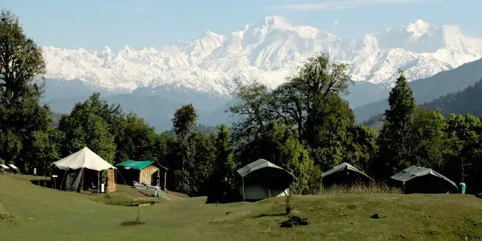

Chopta is undoubtedly the prettiest spot of all the offbeat places in India. Enjoy the spell-binding beauty of the Himalayas, snow-capped mountains, and thick forest trails. The sleepy town will enchant you with its mystical meadows, towering trees, snowy backdrops and warm people.
Attractions In Chopta: Koteshwar Mahadev Temple, Kartik Swami Temple
Best Time To Visit: March To May
When and How to Reach Chopta Valley: The best time to visit the valley is around the months of March to May when the climate is not at its harshest. The summers here present an amicable climate ranging from 10 degrees to 30 degrees, which makes it the perfect time to visit. People usually visit Chopta Valley as part of a trip to Gangtok, Lachen, and Gurudongmar Lake. It’s easily accessible via Gangtok. It is about 7-8 hours from Gangtok by cab.
